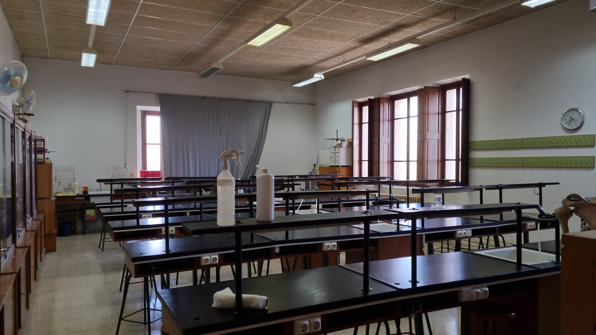
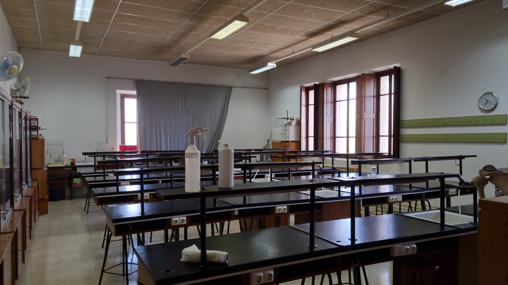

Laboratori de Física
El laboratori de física es localitza en la segona planta de l'institut. És una aula molt ample amb molta capacitat d'alumnes. En aquesta aula ja no s'utilitza per fer pràctiques, per COVID i s'utilitza enguany per classes normals; però abans, sí que es feien experiments en aquesta aula amb el material proporcionat per l'institut.


Laboratori de Química
El laboratori de Química es troba en la segona planta de l'institut. A més de ser un laboratori, és també el departament de física i química i una aula d'imatge i expressió.
Laboratori de Biología
El laboratori de Biología es situa en la segona planta de l'institut, prop del museu de ciències. El laboratori està equipat amb tot el material necessari per fer pràctiques biològiques. A més, també es fan les classes de Geologia en aquesta aula, això permet les pràctiques geològiques. Hi ha material suficient per fer practiques biològiques i geològiques.
 
